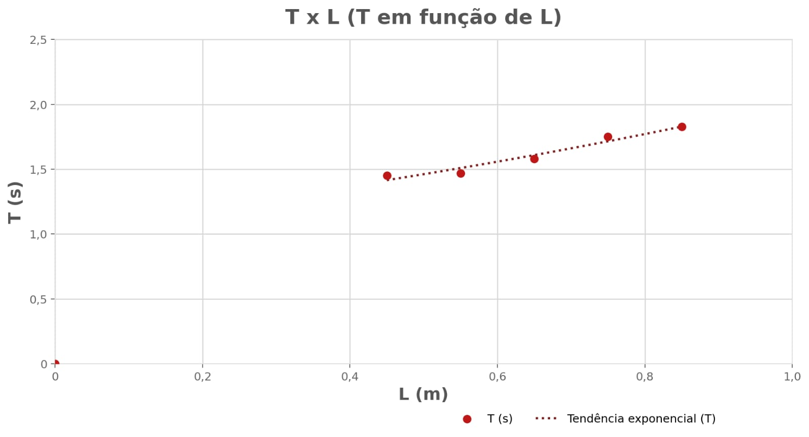
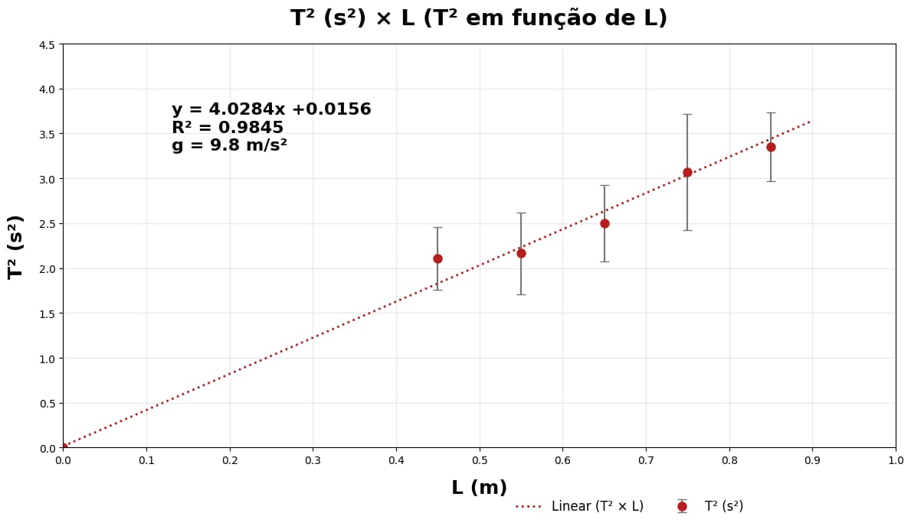
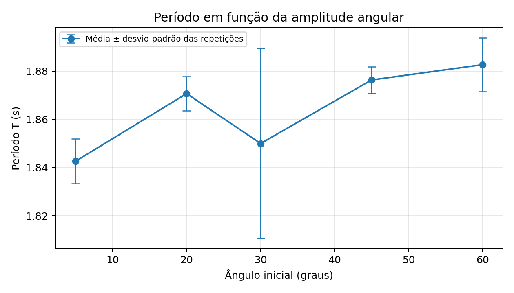

06 • GRÁFICOS
Análise Gráfica
Interpretação dos dados obtidos no experimento.
Figura 1

Modelo: T = 2π√(L/g). O aumento não linear é compatível com T proporcional à raiz quadrada de L.
Figura 2

Equação do ajuste: T² = 4,0284L + 0,0156. Coeficiente de determinação R² = 0,9845. A aceleração da gravidade indicada no gráfico é aproximadamente 9,8 m/s².
Figura 3
